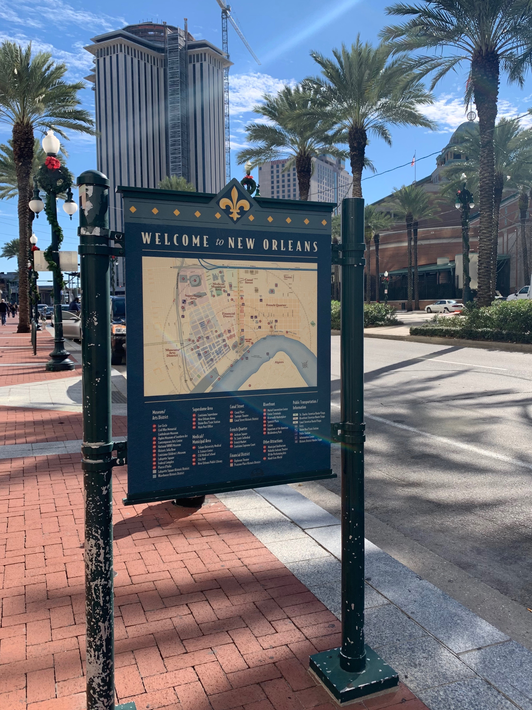
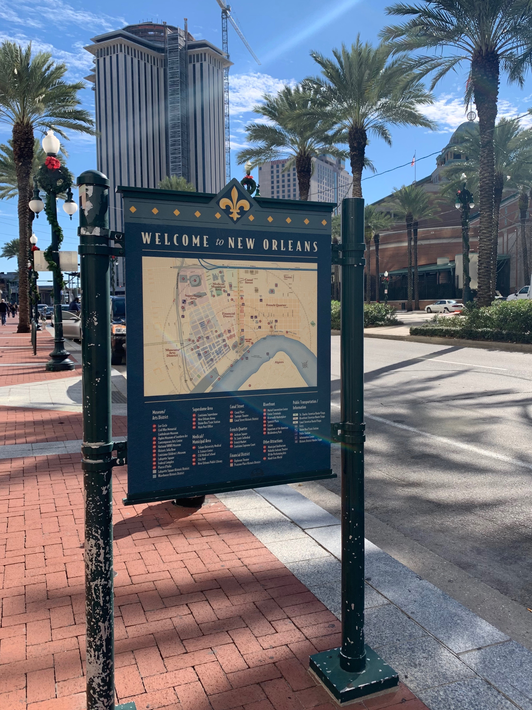
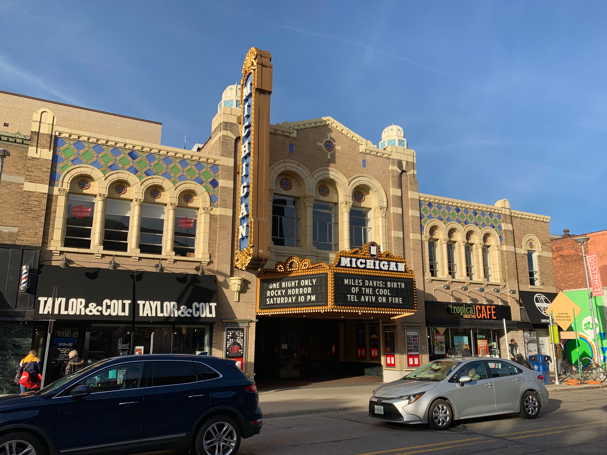
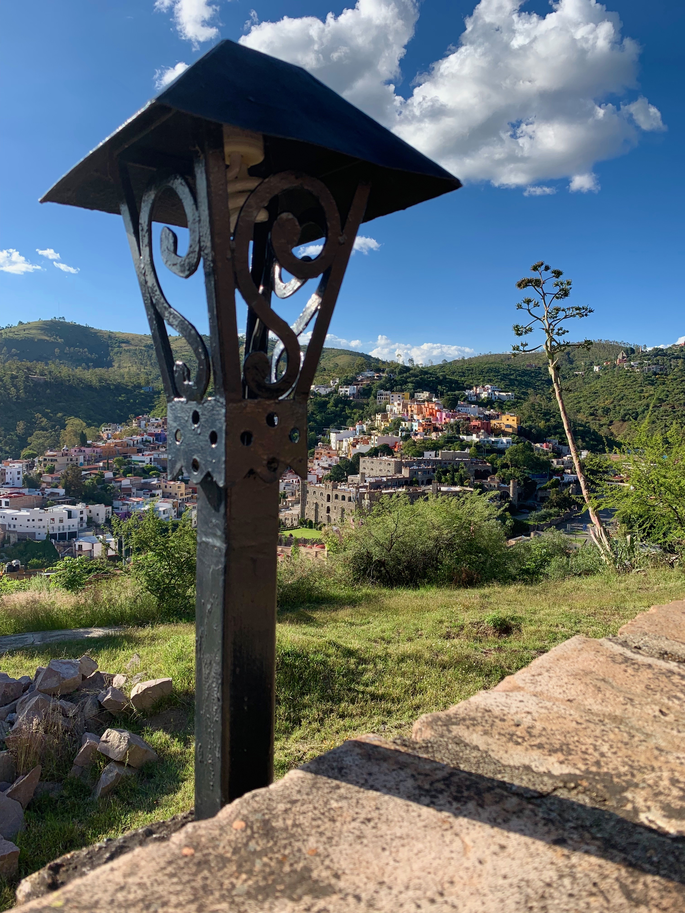
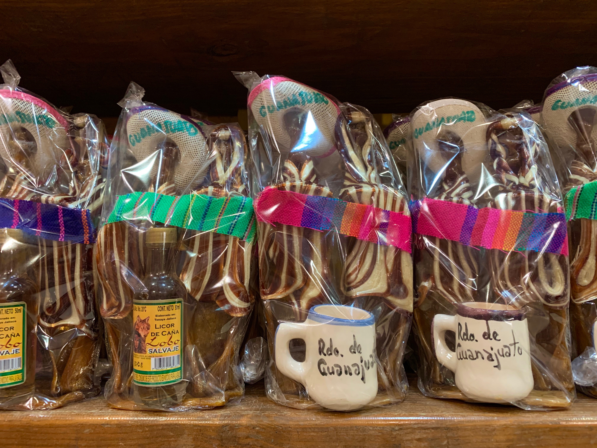
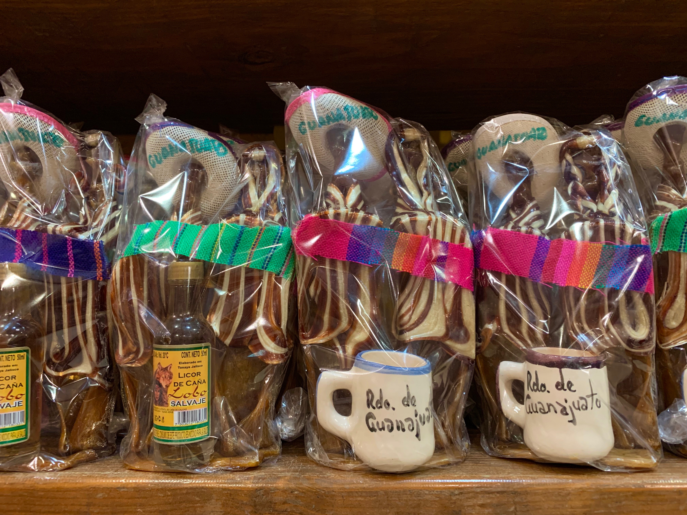

Katharina Kann
Universal Natural Language Processing: How can we build natural language processing systems that work for all of the world’s languages?
While an enormous amount of time, effort, and resources has been invested into developing technology for English, other languages are often overlooked. I am convinced that, in order to make NLP technologies accessible and useful for a wider and more diverse variety of users, more emphasis should be put on developing models for languages besides English, including low-resource languages. Thus, an important goal of my research is to develop computational approaches which perform well across a large variety of languages which might differ from English in their typology as well as the amount of available resources.
Deep Learning · Low-Resource Languages · Transfer Learning · Morphology
Publications
2020- Jason Phang*, Iacer Calixto*, Phu Mon Htut, Yada Pruksachatkun, Haokun Liu, Clara Vania, Katharina Kann and Samuel R. Bowman. English Intermediate-Task Training Improves Zero-Shot Cross-Lingual Transfer Too. In Proceedings of the 1st Conference of the Asia-Pacific Chapter of the Association for Computational Linguistics and the 9th International Joint Conference on Natural Language Processing, online, December 2020 (to appear).
- Rajat Agarwal and Katharina Kann. Acrostic Poem Generation. In Proceedings of the 2019 Conference on Empirical Methods in Natural Language Processing, online, November 2020 (to appear).
- Manuel Mager, Özlem Çetinoğlu and Katharina Kann. Tackling the Low-resource Challenge for Canonical Segmentation. In Proceedings of the 2019 Conference on Empirical Methods in Natural Language Processing, online, November 2020 (to appear).
- Sarah Moeller, Ling Liu, Changbing Yang, Katharina Kann and Mans Hulden. IGT2P: From Interlinear Glossed Texts to Paradigms. In Proceedings of the 2019 Conference on Empirical Methods in Natural Language Processing, online, November 2020 (to appear).
- Katharina Kann*, Arya D. McCarthy*, Garrett Nicolai and Mans Hulden. The SIGMORPHON 2020 Shared Task on Unsupervised Morphological Paradigm Completion. In Proceedings of the 17th SIGMORPHON Workshop on Computational Research in Phonetics, Phonology, and Morphology, online, July 2020.
- Nikhil Prabhu and Katharina Kann. Frustratingly Easy Multilingual Grapheme-to-Phoneme Conversion. In Proceedings of the 17th SIGMORPHON Workshop on Computational Research in Phonetics, Phonology, and Morphology, online, July 2020.
- Assaf Singer and Katharina Kann. The NYU-CUBoulder Systems for SIGMORPHON 2020 Task 0 and Task 2. In Proceedings of the 17th SIGMORPHON Workshop on Computational Research in Phonetics, Phonology, and Morphology, online, July 2020.
- Manuel Mager and Katharina Kann. The IMS–CUBoulder System for the SIGMORPHON 2020 Shared Task on Unsupervised Morphological Paradigm Completion. In Proceedings of the 17th SIGMORPHON Workshop on Computational Research in Phonetics, Phonology, and Morphology, online, July 2020.
- Anhad Mohananey*, Katharina Kann* and Samuel R. Bowman. Self-Training for Unsupervised Parsing with PRPN. In Proceedings of the 16th International Conference on Parsing Technologies, online, July 2020.
- Yada Pruksachatkun*, Jason Phang*, Haokun Liu*, Phu Mon Htut*, Xiaoyi Zhang, Richard Yuanzhe Pang, Clara Vania, Katharina Kann and Samuel R. Bowman. Intermediate-Task Transfer Learning with Pretrained Language Models: When and Why Does It Work? In Proceedings of the 58th Annual Meeting of the Association for Computational Linguistics, online, July 2020.
- Huiming Jin, Liwei Cai, Yihui Peng, Chen Xia, Arya McCarthy and Katharina Kann. Unsupervised Morphological Paradigm Completion. In Proceedings of the 58th Annual Meeting of the Association for Computational Linguistics, online, July 2020.
- Katharina Kann, Samuel R. Bowman and Kyunghyun Cho. Learning to Learn Morphological Inflection for Resource-Poor Languages. In Proceedings of the Thirty-Fourth AAAI Conference on Artificial Intelligence, New York, USA, February 2020.
- Katharina Kann*, Ophélie Lacroix* and Anders Søgaard. Weakly Supervised POS Taggers Perform Poorly on Truly Low-Resource Languages. In Proceedings of the Thirty-Fourth AAAI Conference on Artificial Intelligence, New York, USA, February 2020.
- Katharina Kann. Acquisition of Inflectional Morphology in Artificial Neural Networks With Prior Knowledge. In Proceedings of the Meeting of the Society for Computation in Linguistics, New Orleans, USA, January 2020.
- Johannes Bjerva, Katharina Kann and Isabelle Augenstein. Transductive Auxiliary Task Self-Training for Neural Multi-Task Models. In Proceedings of the 2nd Workshop on Deep Learning Approaches for Low-Resource Natural Language Processing, Hong Kong, China, November 2019.
- Katharina Kann, Anhad Mohananey, Kyunghyun Cho and Samuel R. Bowman. Neural Unsupervised Parsing Beyond English. In Proceedings of the 2nd Workshop on Deep Learning Approaches for Low-Resource Natural Language Processing, Hong Kong, China, November 2019.
- Katharina Kann, Kyunghyun Cho and Samuel R. Bowman. Towards Realistic Practices In Low-Resource Natural Language Processing: The Development Set. In Proceedings of the 2019 Conference on Empirical Methods in Natural Language Processing and 9th International Joint Conference on Natural Language Processing, Hong Kong, China, November 2019.
- Yadollah Yaghoobzadeh, Katharina Kann, T. J. Hazen, Eneko Agirre and Hinrich Schütze. Probing for Semantic Classes: Diagnosing the Meaning Content of Word Embeddings. In Proceedings of the 57th Annual Meeting of the Association for Computational Linguistics, Florence, Italy, August 2019.
- Manuel Mager, Özlem Çetinoğlu and Katharina Kann. Subword-Level Language Identification for Intra-Word Code-Switching. In Proceedings of the 2019 Conference of the North American Chapter of the Association for Computational Linguistics, Minneapolis, USA, June 2019.
- Katharina Kann*, Alex Warstadt*, Adina Williams* and Samuel R. Bowman. Verb Argument Structure Alternations in Word and Sentence Embeddings. In Proceedings of the Meeting of the Society for Computation in Linguistics, New York, USA, January 2019.
- Ryan Cotterell, Christo Kirov, John Sylak-Glassman, Géraldine Walther, Ekaterina Vylomova, Arya D. McCarthy, Katharina Kann, Sebastian Mielke, Garrett Nicolai, Miikka Silfverberg, David Yarowsky, Jason Eisner and Mans Hulden. The CoNLL--SIGMORPHON 2018 Shared Task: Universal Morphological Reinflection. In Proceedings of the SIGNLL Conference on Computational Natural Language Learning, Brussels, Belgium, October/November 2018.
- Katharina Kann, Stanislas Lauly and Kyunghyun Cho. The NYU System for the CoNLL-SIGMORPHON 2018 Shared Task on Universal Morphological Reinflection. In Proceedings of the CoNLL-SIGMORPHON 2018 Shared Task: Universal Morphological Reinflection, Brussels, Belgium, October/November 2018.
- Katharina Kann and Hinrich Schütze. Neural Transductive Learning and Beyond: Morphological Generation in the Minimal-Resource Setting. In Proceedings of the 2018 Conference on Empirical Methods in Natural Language Processing, Brussels, Belgium, October/November 2018.
- Katharina Kann, Sascha Rothe and Katja Filippova. Sentence-Level Fluency Evaluation: References Help, But Can Be Spared! In Proceedings of the SIGNLL Conference on Computational Natural Language Learning, Brussels, Belgium, October/November 2018.
- Manuel Mager, Elisabeth Mager, Alfonso Medina-Urrea, Ivan Meza and Katharina Kann. Lost in Translation: Analysis of Information Loss During Machine Translation Between Polysynthetic and Fusional Languages. In Proceedings of All Together Now? Computational Modeling of Polysynthetic Languages, Santa Fe, USA, August 2018.
- Katharina Kann, Johannes Bjerva, Isabelle Augenstein, Barbara Plank and Anders Søgaard. Character-level Supervision for Low-resource POS Tagging. In Proceedings of the 1st Workshop on Deep Learning Approaches for Low-Resource Natural Language Processing, Melbourne, Australia, July 2018.
- Yadollah Yaghoobzadeh, Katharina Kann and Hinrich Schütze. Evaluating Word Embeddings in Multi-label Classification Using Fine-grained Name Typing. In Proceedings of the 3rd Workshop on Representation Learning for NLP, Melbourne, Australia, July 2018.
- Katharina Kann*, Jesus Manuel Mager Hois*, Ivan Vladimir Meza Ruiz and Hinrich Schütze. Fortification of Neural Morphological Segmentation Models for Polysynthetic Minimal-Resource Languages. In Proceedings of the 2018 Conference of the North American Chapter of the Association for Computational Linguistics: Human Language Technologies New Orleans, USA, June 2018.
pdf
bib
- Katharina Kann and Hinrich Schütze. Unlabeled Data for Morphological Generation With Character-Based Sequence-to-Sequence Models. In Proceedings of the 1st Workshop on Subword and Character Level Models in NLP, Copenhagen, Denmark, September 2017.
pdf
bib
- Huiming Jin and Katharina Kann. Exploring Cross-Lingual Transfer of Morphological Knowledge In Sequence-to-Sequence Models. In Proceedings of the 1st Workshop on Subword and Character Level Models in NLP, Copenhagen, Denmark, September 2017.
pdf
bib
- Katharina Kann and Hinrich Schütze. The LMU System for the CoNLL-SIGMORPHON 2017 Shared Task on Universal Morphological Reinflection. In Proceedings of the CoNLL-SIGMORPHON 2017 Shared Task: Universal Morphological Reinflection, Vancouver, Canada, August 2017.
pdf
bib
- Toms Bergmanis, Katharina Kann, Hinrich Schütze and Sharon Goldwater. Training Data Augmentation for Low-Resource Morphological Inflection. In Proceedings of the CoNLL-SIGMORPHON 2017 Shared Task: Universal Morphological Reinflection, Vancouver, Canada, August 2017.
pdf
bib
- Katharina Kann, Ryan Cotterell and Hinrich Schütze. One-Shot Neural Cross-Lingual Transfer for Paradigm Completion. In Proceedings of the 55th Annual Meeting of the Association for Computational Linguistics, Vancouver, Canada, August 2017.
pdf
bib
- Katharina Kann, Ryan Cotterell and Hinrich Schütze. Neural Multi-Source Morphological Reinflection. In Proceedings of the 2017 Conference of the European Chapter of the Association for Computational Linguistics, Valencia, Spain, April 2017.
pdf
bib
- Katharina Kann, Ryan Cotterell and Hinrich Schütze. Neural Morphological Analysis: Encoding-Decoding Canonical Segments. In Proceedings of the 2016 Conference on Empirical Methods in Natural Language Processing, Austin, USA, November 2016.
pdf
bib
- Katharina Kann and Hinrich Schütze. MED: The LMU System for the SIGMORPHON 2016 Shared Task on Morphological Reinflection. In Proceedings of the 14th SIGMORPHON Workshop on Computational Research in Phonetics, Phonology, and Morphology, Berlin, Germany, August 2016.
pdf
bib
- Katharina Kann and Hinrich Schütze. Single-Model Encoder-Decoder with Explicit Morphological Representation for Reinflection. In Proceedings of the 54th Annual Meeting of the Association for Computational Linguistics, Berlin, Germany, August 2016.
pdf
bib
Research Group
The website of NALA, my research group, can be found here.PhD Students
- Stephane Aroca-Ouellette (co-advised by Alessandro Roncone)
- Abteen Ebrahimi
- Yoshinari Fujinuma (co-advised by Jordan Boyd-Graber)
- Ananya Ganesh (co-advised by Martha Palmer)
- Adam Wiemerslage
- Rajat Bhatnagar
- Connor Cook
- Andrew Gerlach
- Nikhil Prabhu
- Changbing Yang
- Jeffrey Lucca
Travels
New York, USA · February 2020 · AAAI{kind=link}
New Orleans, USA · January 2020 · LSA
 

{kind=link}
{kind=link}
{kind=link}

Hong Kong, China · November 2019 · EMNLP
{kind=link}
{kind=link}
{kind=link}
{kind=link}
{kind=link}
{kind=link}
{kind=link}
{kind=link}
{kind=link}
Philadelphia, USA · October 2019 · CLunch
{kind=link}
{kind=link}
{kind=link}
{kind=link}
{kind=link}
{kind=link}
Ann Arbor, USA · October 2019 · Michigan AI Symposium

{kind=link}
{kind=link}
{kind=link}
{kind=link}
{kind=link}
{kind=link}
Guanajuato, Mexico · October 2019 · PLAGAA

{kind=link}
 

{kind=link}
{kind=link}
{kind=link}
{kind=link}
{kind=link}
{kind=link}
{kind=link}
Prospective Students
If you are a student interested in working with me, please read the following first.- If you are currently a student at CU Boulder: If you are interested in an independent study, you should have a look at the PhD students' interests on our group's page. Then, send an email to the PhD student whose interests are closest to yours, cc'ing me. Describe your relevant background and two project ideas in a few sentences. Add "[ISCUBNALA]" to the subject of your email.
- If you are not a student at CU Boulder and want to start a PhD here: In this case, you should apply directly to CU Boulder's PhD program in computer science and list me as a potential advisor. You can increase your chances of acceptance by also contacting me per email around the application deadline. In this case, "[PHDCUBNALA]" should be the first word of your email's subject.
- Everyone else: If you want to send me an email about any other topic and we have not previously been in contact, adding "[MISCCUBNALA]" to your email's subject will increase your chances of receiving an answer.